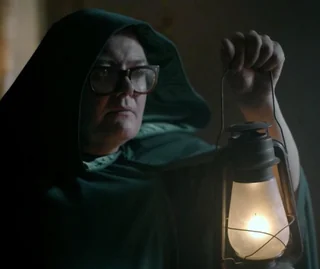
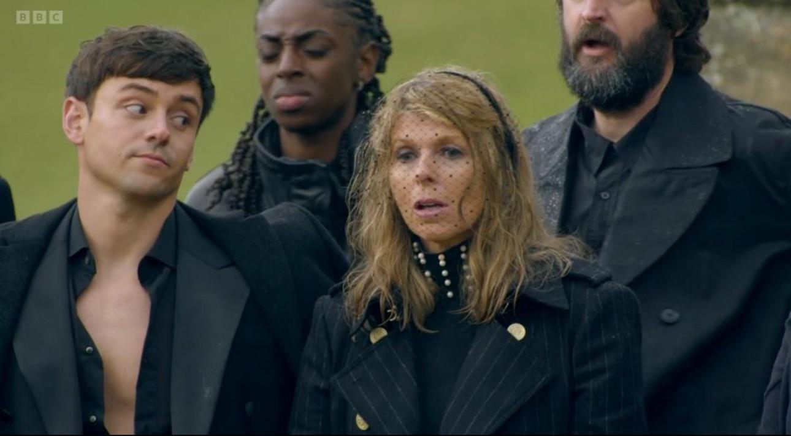
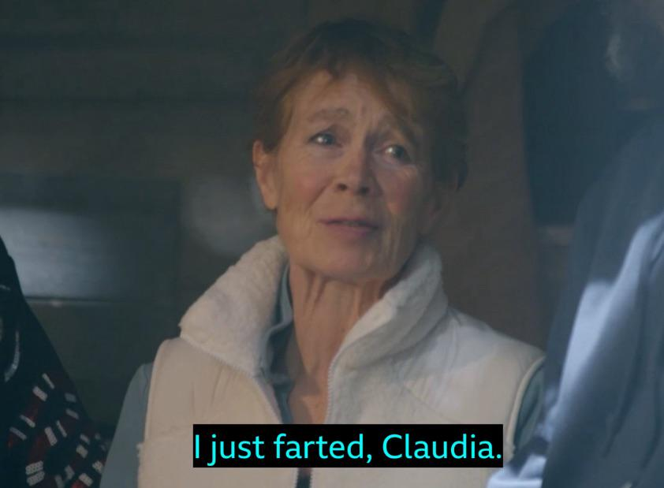
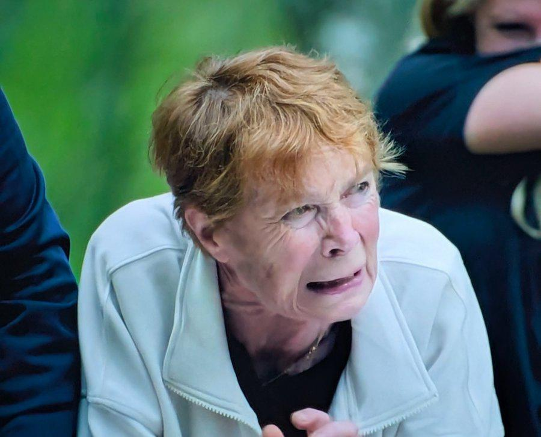
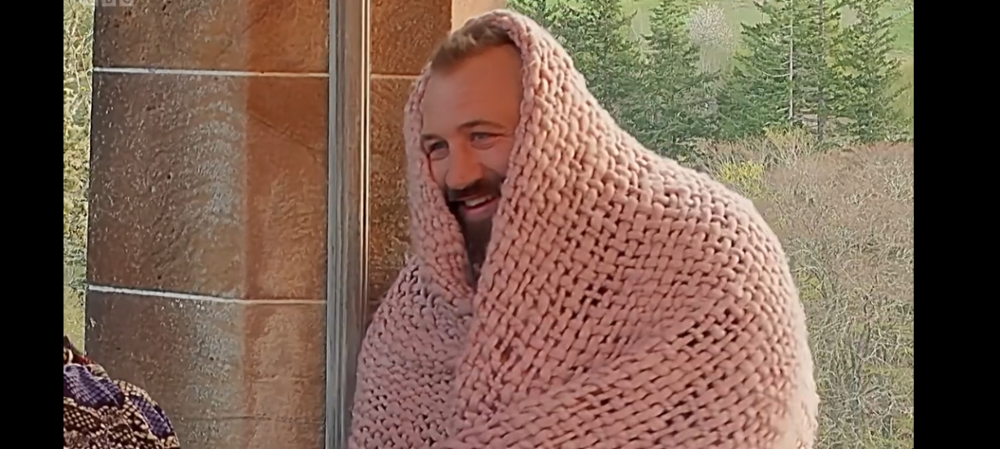
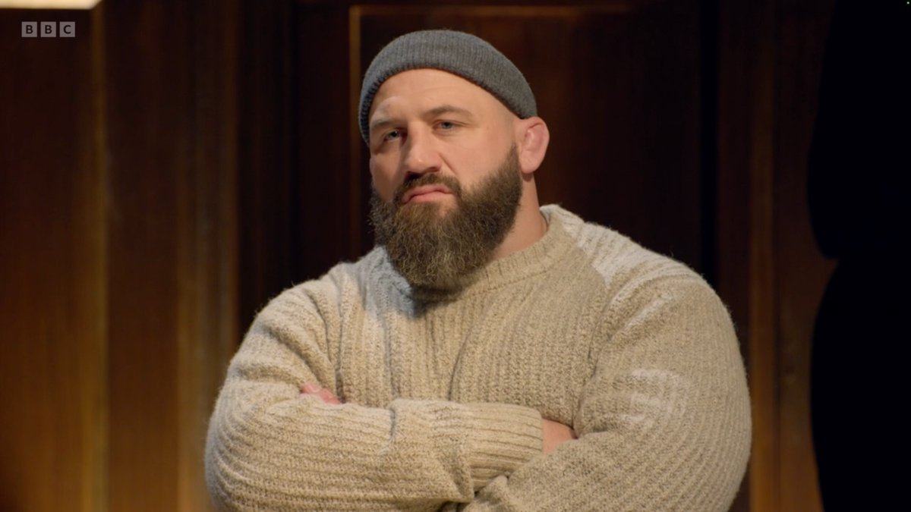
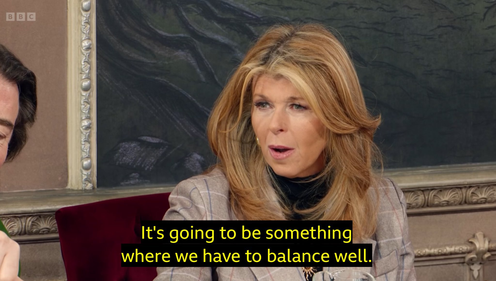
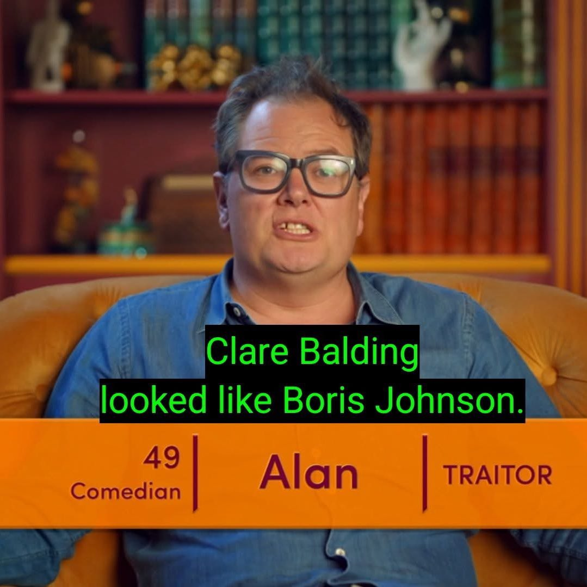
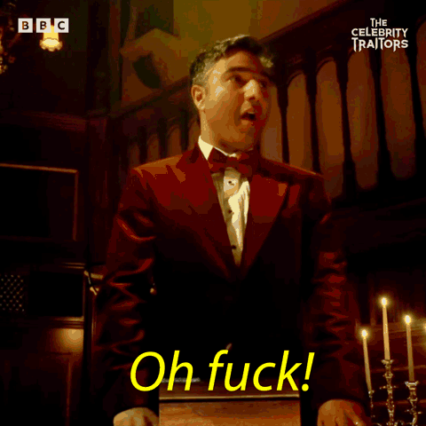
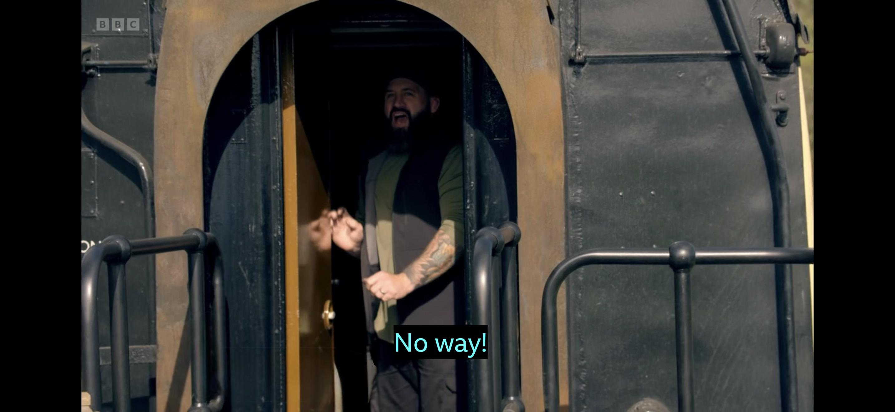

Celebrities & Contestants list ONLY NO Spoilers Continue reading ONLY if you are upto date
Nick Mohammed is the bookies favourite to win at 7/4, meaning he'll be the first one murdered. Seems almost inevitable that Alan Carr will be a traitor, Lucy Beaumont will lose her mind with the wildest theories and “you can’t trust them – they are an actor” will be said in every episode. Will they arrive by train? Will the first task involve setting fire to something big while Claudia screams “come on… hurry up”? Assuming that Charlotte Church* isn’t going to pretend to be Scottish and that Tom Daley isn’t Kate Garraway’s son, where is the twist coming from this time? Perhaps Little Mix can hide in the castle handing out protective shields to those who recognise them**. Clare Balding and Jonathan Ross will spend the first episode persuading everyone that there will be less than three or more than three traitors this time – even though Claudia always picks three. Inevitably the winner will be someone we have never heard of before. Let the magic and insanity of the roundtable begin!
*She is Welsh
**Black Magic
Ed Gamble chiselling the grave stone! Nick digs Celia's grave, Celia immediately gets suspicious. While we miss out on Celia and Joe Marler being traitors,
we get Jonathan, Cat and Alan. Alan immediately starts sweating and behaving weirdly, thus cementing his status as all time
traitor legend. They push a wooden trojan horse up a hill through 4 locked gates. At the first gate Clare pulls a 'Balding' as she pulls a lever
locking the gate. Charlotte gives up her shield and suspicion turns on them both. Nick guides them through the remaining gates with his genius.
Back in castle the traitors are told to murder in plain sight, by rubbing hands on a black lilly and then touching someone's face.
Will Alan touch his own face? (he did seem to get quite a bit of pollen on his hands)
Ruth making a tray of marshmallows come back on her when the faithful realise someone was murdered in plain sight?
Jonathan forgetting he had a shield when speaking to Joe M
Ruth and Niko pact
Jonathan and Alan saying see you in the tower
Alan unable to whisper

Suspicious: Clare, Charlotte
Under the radar: David, Lucy, Mark
Safe: Stephen, Cat, Joe M, Joe W
Playing a different game: Alan
Murdered: no one - Banished: no one - Shields: Jonathan, Joe M, Joe W, Celia, Charlotte (gave it up)
Prize Pot = £15,000
Alan hones his hands in on Ruth and Paloma in the kitchen. The traitors discuss what happened in the tower - Alan reveals he killed Paloma. Its a slow death
so at breakfast everyone is still present - queue some dramatic over acting (see Kate). They attend the funeral cortege of (the still unawre) Paloma.
Tom becomes the first person in history to attend a funeral with his shirt completely open, as he competes with Charlotte for the 'traitors most
clevage exposed' award 2025. Three coffins await the gang; Claudia gives spurious clues as to who they belong to. We end up with Niko,
Lucy & Paloma 'lying in state', Lucy is ok as she has previous 'slept in a wheelie bin'. The celebrities guess, wrongly, that Lucy was the one choosen by the traitors. Claudia shuts Paloma's coffin lid and hence is murdered.
Jonathan asks Alan to say a few words, Alan stutters, sweats and almost confesses. Jonathan plays it cool.
At the roundtable Stephen annonuces that Sherlock Holmes said once 'it is a cardinal error to theorise without data', as everyone
then theorises without data, including himself - as he goes for Niko. Tom seems to have his foot on Kate's neck, and Mark identifies
Tameka as suspicious - she isn't happy about that. Clare does a 'Balding' again by identifying Alan as a good choice for a traitor and proceeds
to not mention it. Joe M appears to have missed Jonathan's shield slip in episode 1. Joe W, having previously calling himself a sheep, turns his
guns on Tom, while defending Niko.
The vote begins and as Stephen is asked to vote the episode ends. 9 votes remain it - it could be anyone.

Suspicious: Niko, Kate, Tameka, Tom
Under the radar: David, Lucy, Mark, Jonathan
Safe: Stephen, Cat, Joe M, Joe W, Ruth
Playing a different game: Alan
Murdered: Paloma - Banished: tbd - Shield(s): None
3 votes for Niko, 3 votes for Kate, 2 for Tameka, 1 for Tom
9 votes as yet unseen
Prize Pot = £19,500
Stephen votes for Niko and anticlimactically 7 votes also go his way, cue much guilt from the players. The traitors meet
they decide between Clare 'so it gets pinned on Kate', Tom 'massively perceptive Daylee' or 'completely out of leftfield' Joe W. Tom has
a shower, he doesn't seem to mind being filmed - tick off your Bingo Card. At the continental breakfast Tom doesn't return. He didn't take the news well,
Claudia drops his picture on the floor and Jonathan wears a carpet. Ruth has all guns pointed at Jonathan who has broken their alliance
'don't piss in my ear and tell me its raining', she is mad determined now as is Clare.
On the way to the task, the cars are stopped by golden masked figures who escort them to the creepy cabin. The players are locked to
a central point. Celia lets one go; Claudia struggles to keep it together. They basically have 15mins to unlock themselves, the keys
are outside. While the game begins the remaining players are showered in water; Tameka fears drowning, sparks fly from fuse boards;
screaming from Kate and feathers (chicken?) are blown in causing Alan to dry heave. They complete the task, Mark and Clare dig through
troughs of mud to find shields and they bank all the money.
Mark still thinks Tameka and Tameka thinks Mark. Celia openly snoops, the Joe's come up with the Big Dog theory (Faithful team Stephen,
Traitor team Jonathan). Jonathan looks very vulnerable now. At the roundtable and Clare gives 'her who is the least likely to kill Paloma - its
Alan theory' and in the style of Doctor Who she regenerates from task blunderer into a cold-eyed traitor hunter. Joe M brings forward big dog theory
and Joe W and Ruth both zoned in on Jonathan as cold eyed Clare goes in.
Voting is wild. Joe M 'its Jonathan, its Jonathan, its Jonathan' and then votes for Kate. In the end Tameka is banished with just 4 votes out of 17.
Mark is unhappy how wrong he is. Back in the tower the traitors narrow it down to Ruth, David or Charlotte. At the roundtable Jonathan voted
for Ruth.
Alan and Cat have agreed to throw Jonathan under the bus. Seems almost certain they'll murder Ruth and turn on the Big Dog.
Watch out for Clare, Jonathan!
Alan is now playing a blinder, when will Kate go?

Suspicious: Jonathan
Under the radar: Joe W, Joe M, Lucy (no one voted for them)
Safe: Clare, Alan
Playing a different game: Jonathan, Kate
Murdered: Tom, (Ruth/David/Charlotte) - Banished: Niko, Tameka - Shields: Mark, Clare
Prize Pot = £27,500
'Clare appears very pleased to have a shield' observes Joe W. Clare has one thing on her mind only...'he said the word alliance'.
Ruth is murdered; Jonathan plays his double bluff (Ruth suspects Jonathan on reading her letter) - 'Jonathan I think thats got you
off the hook now' - as Joe W steps up. Jonathan points the guns at Clare, Clare points them back. Classic traitor response.
Team Big Dog hunters meet, Joe M thinks Jonathan, Joe W thinks Stephen - they reach no clear conclusion. Bad Badminton is played.
Task time and it basically involves one group screaming down a well after asking a banshee to let out their wail. The other group submerge theirs heads in a well of water
to listen to the screams. Celia appears to have a breakdown on this task. They are to identify the matching scream with a name/heart thing.
They get all bar 1 correct, the listeners get wet. Jonathan lets Stephen take the shield, Clare notices, Cat takes the other. Cat's group agree to
keep the shield owner hidden.
At the roundtable attention is directed firstly to David, the 'you are quiet therefore you = traitor' theory. Celia is suspected by Nick.
Clare goes for Jonathan; Jonathan goes for Clare - the gang are influenced by Jonathan and seemingly go for Clare. Joe M isn't having it
'you ARE a traitor Jonathan' - and votes for him. Clare up first and votes for... Charlotte! (did that discussion get edited?). The herd
moves big time and its towards Clare she gets 7 votes. Perhaps what did for her is her ability to be confidently incorrect so often
that when she is spot on no one listens? Mark is properly annoyed. Kate is sheep like.
Alan (the star of the show) and Cat are playing a brilliant game. In the tower they debate Charlotte, Kate and David. Feels like its Charlottes time. Jonathan is toast.

Suspicious: Jonathan, Mark, David, Charlotte
Under the radar: Joe M, Lucy, Nick, Stephen
Safe: Alan, Cat, Joe W
Playing a different game: Celia, Kate
Murdered: Ruth, (Charlotte, Kate, David) - Banished: Clare - Shields: Stephen, Cat
Prize Pot = £31,500
Charlotte didn't appear at breakfast and became the 4th player murdered. Nick thinks Cat is 'slipping under the radar'. Stephen
is becoming more theatrical as the game goes on 'what fresh hell is this', 'unbelievable', 'oh loooord', 'praise god!' - he realises its a game right?
Joe M is suspicious of all the actors today, flanked by *All* the actors he goes for Mark, but he thinks Jonathan is the leader of
the traitors 'the head of the snake' - but is v.reluctant to go for him. Cat thinks its Stephen or Jonathan... could that backfire?
Into the woods to play a version of Go Ape with traps and fake bags of money. The deal is: they answer a question with 1,2,3 or 4
possible answers, a player stands in the trap holding the fake bags on the answer they think it is. Other player(s) can 'play it safe'
by standing with lesser amounts in the other traps. Get the question right and they get the money being held and the player gets a shield.
'How many dives did Tom Daylee make in his Olympic career?' - 96 or 102. Stephen (wrongly) points out that there are 4 dives (its actually 6 - trust me!)
in a set and that 96 divides by 4. Nick jumps in 96 and Alan jumps in 102 - Alan gets trapped.
Increasingly the game looks like a corporate team building thing, cue shrieking and clapping. Jonathan is like the creepy CEO who has seen everyone's
HR file and knows all about their first jobs - its easy for him. David, Jonathan, Lucy and Nick get the shields.
Back to castle and Kate declares - 'so far I've been so useless its breathtaking', nods from others. All talk pre table is Jonathan and yet at the table...
he dives under the radar. David, the smartest man in the room, calmly reasons Joe M is trying to steer people towards Mark. Joe W immediately
interprets this as David falling into his 'quiet until you need to be vocal' theory and is now 100% a traitor. Joe M,
wearing shorts and a pink knitted blanket, chuckles at the ridiculousness of him being a traitor. JR just smiles
and follows along. When Joe M and Joe W fall out it will be special.
Its a 20min roundtable. Joe M 'I think its more important to vote off a traitor', dismissing JR's Stephen theory, Celia asks 'who are they though?'
'its MARK! [you idiots]' Joe M announces. He is so convinced nothing is changing his mind. Mark defends passionately - but he's an actor - so pah!
David speaks articulately, reasonably and intelligently (he is everything Stephen isn't) - and in that moment manages to turn all the attention on him - Joe W goes at him.
Nick questions Kate, Kate uses the 'I don't really know what I am doing defence' and randomly fires out names. Does Kate think she is on
holiday in the castle? It is hard to see her ever being banished or murdered - perhaps that is genius?
Cat thinks its between Stephen and JR, Stephen points out that 'you know there are 3', Cat panics and jumps on David - she votes for him
later. She looks uncomfortable, do they see it? David makes another well-reasoned argument, Mark passionately defends himself. The vote is
tied 4-4 for David and Mark. It goes to a tie break. Again, David makes a well-reasoned argument and Mark passionately defends himself.
They vote again, its a DRAW. They are to decide by chance - coin toss?

Suspicious: Jonathan, Mark, David, Stephen, Cat(?)
Under the radar: Lucy, Nick, Celia
Safe: Alan, Joe W
Playing a different game: Kate (enjoying her holiday), Joe M
Murdered: Charlotte - Banished: David/Mark (Chance) - Shields: David, Jonathan, Lucy, Nick
Prize Pot = £38,500
Mark vs David. Claudia brings out 'chests of chance', one containing a shield, one without. Mark allows David to choose first. Then they open them at the same time.
Carrot in the box would have been a much better way
On reveal its David who has the shield and is therefore protected - Mark is banished. Lucy has starting thinking it **might** be Jonathan.
Traitor tower, Cat thinks Joe W needs to go, JR thinks Kate, Alan thinks Stephen Fry - 'Get on with it and kill him'. Alan is getting more
cocky/confident 'its getting easier every time!'.
Breakfast time.... Joe W has been murdered. Joe M is upset, 'I just love him'. David is suspicious of Kate and Stephen as they communicate well
together. JR still pushing David - he jumps on the hype train so quickly. Nick is adopting a new 'align with a traitor' approach,
he suspects JR and Kate.
Chess board mission. They split into teams; the winners get shields. The traitors try and setup a team of just traitors - Joe M and Nick
want to mix it up and do... both for slightly different reasons. First up, who is weakest? Both teams pick Kate, who has a very
thick skin, 'at last I can be of use!', *grimacing emoji*. Who is two faced? 'Oh, its me say Celia' - not the slightest bit bothered.
Last round, one player per team now... its Nick and Joe M to decide who is the leader of the faithful. They collude 'I'll let you win' says Nick,
Joe M chooses Stephen... Lucy is completely mystified.
Nick and Joe M align to become the new 'Joe W and Joe M'. Lucy confronts Kate 'but WHAT do you think?' - 'Stephen?' says Kate. Lucy thinks JR or
Stephen, the traitors push Stephen to deflect away from JR - its subtle. At the roundtable JR brings up David again - almost like he's testing
the temperature on him. He stays calm.
This becomes the roundtable of Bombshells & BlundersTM
Boom! - Stephen observes Cat sleeps alot. 'Traitors don't get as much sleep as we do'. Cat says she has Autism and ADHD, and that makes her tired.
Boom! - JR changes his mind... now thinks Stephen, he thought that last night but felt the facts presented indicated Mark.
Boom! - Joe M is not buying this. 'OR you knew he [Mark] was a faithful as you know everyone's status in the game!'
Boom! - 'I can't get my head to stop thinking about you JR... the Big Dog theoryTM and the Ruth incident' - Joe M.
Blunder! - Alan jumps in to defend (Alan has been loyal, unlike Cat) JR and says 'well its probably you' [to Joe M]. 'The Traitors murder
those who stick their heads above the parapet [so thats me gone]' - Alan. 'They won't murder you tonight though' notes Joe M, 'What?!?' says Alan
'You've got a shield', 'oh yeah,... yeah'. *face palm emoji*
Boom! - Joe M cold eyed - looks at JR 'We are not all trying to find a traitor though ARE WE!' *smoking hot emoji*
Blunder! - JR announces he's voting Joe M tonight (changes his mind again), Joe M is even more convinced.
Boom! - 'I sabotaged the final round' announces Nick. This basically blows the doors off Kate's mind; 1 Mississippi... 2 Mississippi...
3 Mississippi... [Nick must be a traitor logically] 'that makes me think you are guilty'. Nick claims protection of the faithful as his motive.
Voting. Alan goes for Joe M, JR changes his mind for 3rd time and goes Stephen. The herd moves towards Stephen and he is banished.
Stephen's Cat bombshell didn't quite land sadly, his main contribution has been the 'why use 1 word when 10 will do' strategy. Joe M
needs more from Cat now, Cat is privately astonished that they have not booted JR out yet. Kate has not recovered from Nicks bombshell, she
may never return from this trauma - her holiday is in ruins. Joe M reminds Nick, Cat and (now enlightened) Lucy that 'Alan forgot he had a shield',
Lucy knows this is BIG.
Murder is on the Chess Board. Nick, Lucy and Kate are to stand on the Chess Board, when they turn around... if they see Claudia they
live, if they see the traitors they die. Kate is hoping for death.
3 episodes left.... the Seer episode must be incoming now. JR must be toast.
Can we bring Clare back?
*clapping emoji* to the production and editing. 👏

Suspicious: Jonathan!
Under the radar: Celia
Safe: no one now
Playing a different game: Joe M
Murdered: Joe W, (Nick/Kate/Lucy) - Banished: Mark, Stephen - Shields: Alan, Cat, Celia, David, Joe M
Prize Pot = £43,500
Voted for -
Alan - Joe M
Cat - Stephen
Celia - Joe M
David - Stephen
Joe M - JR
Jonathan - Stephen
Kate - Nick
Lucy - JR
Nick - Stephen
Stephen - David
Somewhat anticlimactically Nick sees Claudia and is safe. Its between Kate and Lucy. At breakfast Nick arrives and reveals the Chess
board murder to everyone. When JR arrives, he sort of blusters it out, did he get away with it again? Finally, Kate walks thus in confirming Lucy's
murder. On the board last night Lucy is not impressed 'I'm sorry Lucy' [Alan] - 'No! that's not good enough' [Lucy] - 'See ya wouldn't
want to be yer' [JR]. Back at the breakfast table Nick admits it was 'quite stressful', its alright as Celia thinks he has been 'brave'.
ITS A BLOODY GAME! Claudia arrives and announces the next mission 'I hope Lucy's murder hasn't put you off balance'. Detective Kate is on it
concluding that the task must be where they 'balance well' - 'Alright Sherlock' decrees Carr.
Bad Badminton returns outside with David and Nick staring. David is a bit fixed on the previous chess game, wrongly picking out Nick
as the person who wanted to change the groups... he suspects Nick. David's arrow is way off now, no one else is with him - he wanders a lonely path. Celia wants a pact
made between her Joe M and Cat to go for JR. Cat really has no choice but to agree. JR and Alan target Kate, they want her to go for Joe M.
Kate is 'so confused'. Alan and JR agree to go for Joe M - but JR has changed his mind many times before
This time the task involves walking across a rickety bridge. Disappointingly they are not blindfolded, or have the GladiatorsTM swinging
from either side trying to knock them off. Alan goes first and screeches, then Nick who does it with ease, Cat then screeches and
Joe M walks using a wavey arm bolt upright technique - like a flouncing meerkat. They all succeed, their partners
(Kate, JR, Celia, David) catch massive (un-droppable) sacks and select someone to get a shield. They all select their partner
'bridge walker', which means, as Joe M and David were the last pair - that David picks Joe M who gets protected. The easiest £10k anyone
has 'earned' since Michelle Mone. Tom Daylee would have probably cartwheeled across the bridge while knitting. Most excited -
Claudia 'Woohoo' Winkleman, she has done many a childs birthday party
Its the Anglo Italian combination of lasagne and salad for tea, Joe M has a nice big slab of it. JR and Alan sit with Kate and this time
they are pointing at David, its smart play build momentum behind a faithful and ride it out. David leans towards Nick, Joe M and Nick
are suspicious of him. Celia tells Alan she is going for JR tonight, Alan ever loyal tries to deflect but it just draws suspicion on
himself. JR mentions Alan might be a traitor, no one really sees what David sees so that makes him standout.
At the roundtable David brings up the Chess mission again, he doesn't understand why Nick changed the teams, Joe M corrects him saying
it was actually him (Joe M) who wanted to mix it up. Joe M askes for Alan to speak, Alan blusters but rallies on the David theory. Celia
announces its important to get a traitor tonight to universal agree. Cat asks to speak... and finally puts JR in the bin. She had to, a
previous strong exponent of the Big Dog TheoryTM, she cannot walk it back now. Celia's in. Alan in the do or die moment
attempts final deflection pointing at Joe M 'I know he has a quite weird persona' - 'Pot, Kettle mate' responds Joe M - the ex-England
front row can more than handle himself. Alan thinks Joe M is in cahoots
with JR - he's made a right old mess of this tonight.
Voting time and bar a few oddities (David!) the hive moves (Alan and Cat pile in) at JR and he is FINALLY gone. 'I don't want to be rude
but you'll all idiots... but I'm not judging because its fiendish... I'm blaming the game... I am completely faithful.....
to the TRAITORS' and with that he waved goodbye. Jonathan is pleased that Alan and Cat went for him, he knows its a game, he played
so very well. There is euphoria especially from Joe M who looks spent, he has a shield so will sleep well and re group. David (as JR
voted him 'you take out your mate theory - see season 1 and Kieran parting shot at Wilf') and Alan (because well... its ALAN)
are now prime suspects. Dinner party incoming - probably to discuss the chosen charities. The problem is though that 'its murder in
plain sight again' - the traitors have to toast someone with the phrase 'Parting is such sweet sorrow [name]'.
Cat is 100% not saying that. Lets see who Alan murders then. Celia might well be the one 'its time to leave the house,
your live on Channel 4, don't say F*** or Bugger'

Suspicious: David, Nick, Alan
Under the radar: Celia, Cat
Safe: no one now
Playing a different game: Joe M
Murdered: Lucy - Banished: Jonathan - Shields: Joe M
Prize Pot = £53,500
Voted for -
Alan - Jonathan
Cat - Jonathan
Celia - Jonathan
David - Nick
Joe M - Jonathan
Jonathan - David
Kate - Jonathan
Nick - Jonathan
Celia is murdered in plain sight by Alan, who thinks it was so obvious and yet... nobody is the wiser. Detective Inspector
Kate thinks it might be something to do with who had sundried tomatoes at the dinner! Her attempts at solving this riddle are just
'cringe' according to diary room Alan. Discussions are now pretty limited as the group is small, this is when it s most risky for
the traitors, they have to pick a target... that appears to be Kate 'Go away' [hat tip Alan], or the wildly wrong David. Very little focus
is on the murder in plain sight.
The task is the step over laser beams with an object challenge. This time the objects are the plastic heads of all 19 players. There is a lot of
'getting low' and careful stepping, but in truth it doesn't appear too challenging and they all complete fairly easily.
Claudia is the most excited again '... better than her wedding day', bar Alan's dead panning its all pretty uneventful. She must
have had one of those buffet things.
Back at castle Kate spends most of the time complaining everyone thinks its her, she perhaps would be better advised to drill further
into the sundried tomatoes theory. Nick and Joe M are the only ones with any sense of a strategy now, they are aligning with the
traitors and picking off the faithful. At the end they will with vote off everyone until it is just them who remains. The roundtable
is basically a choice between Kate and David, neither of whom really have done anything suspicious. It is just that Kate is a journalist who
has been trained to be neutral (and to be fair she is excellent at it) and David who is quiet and very articulate but wildly wrong
at every step. Its not really 'Traitor behaviour'. The most compelling moment is when Nick questions Cat, previously suspected by Stephen (the sleeping alot theory), who uses
the 'I'm a duck' [completely off the wall bonkers] defence. David and Kate have an exchange, which seems to indicate they don't
really like each other - one of them is doomed now and Kate is odds on. Alan seizing his chance... highlights that 'both your
names come up all the time'. Its close voting: 3 for Kate and 2 for David, but Nick votes for Cat. The filming has Joe M with the decisive
vote but its Nick that controls this game. Kate is banished, she has been great value, seems to have genuinely enjoyed herself.
We are in end game now. Joe M 'I think Alan and Cat are traitors'. He tells David and he tells Nick. Nick and him are
Hundies Joe is ALL IN. The final five are drummed towards the fire pit.
They have to say that 'I am a faithful'. Alan cannot achieve these 4 words without laughing. - Joe M knows [!!!] its so obvious now.
At the tower Cat and Alan pledge alliance to each other... lets see how that goes.
Final episode thought... someone jumps out a helicopter, someone gets in a speed boat, they dig in sand, Alan falls over.
David is least likely to win, but he is needed by the Traitors and he is needed by the Hundies. Odds on the Hundies keep voting
until only they remain.

Going home: David, Cat & Alan
Going to win: Nick & Joe M
Murdered: Celia - Banished: Kate - Shields: N/A
Prize Pot = £64,500
Voted for -
Alan - David
Cat - Kate
David - Kate
Joe M - Kate
Kate - David
Nick - Cat

The final five meet at breakfast and montages of their 'best bits' are played. There seems no path for David to win now, but his vote
will be important. Its team Hundies vs team Traitors, and yet.... Nick has doubts on Joe.
The task is on a steam train 'I've never seen a steam train before' says a flabbergasted Cat. They have to board the train and solve
clues to get keys that unlock 4 boxes that contain 5k in each. They have 20mins and then the 'explosives' go off. They spend 8 minutes
in the first carriage generally just dicking about, but they crack the code and unlock the box containing the key.
Alan stores it safely in his 'pouch'. Carriage 2 - they have to count the previous roundtable votes on the slates, they try 58 then 61.
9mins 30sec left, Joe M opens the third carriage door and sees its actually an open carriage and instantly closes it. The have to unwrap
chains around coffins, Joe M is 'happy to lose a finger' - they have 6 mins left. They get the key, 'put it in my bum bag'.
Fourth carriage, basically scrambling in coal / dirt / grit. One of the container's wooden lid keeps hitting Joe M on the head in a
scene that pays homage to the Chuckle brothers so Nick props it open with his head. Nick ultimately get in and just like on day 1
digs frantically for a shield key. They unlock the boxes with oversized bags of gold the any comedy robber would be happy to be seen with
and dive off the exploding train saving the world walk away from a train with some fireworks on that were set off when the
'talent was far enough away not to be in any peril'. 'you just jumped off a train... and then it EXPLODED' - Claudia
Alan and Cat are going for David. David feels clueless, Nick is going to vote for Cat... Nick asks David if he is a faithful - he is.
Joe forms an pact with Alan & Cat and to vote for David. Alan cannot believe how easy this is, Cat's play is to vote David... then Nick and
then end the game. Joe waivers, he knows he has the deciding vote. At the roundtable Nick is wearing a velvet suit with bow tie, Joe M
is dressed as a biker, Alan is dressed like a bingo caller and David wears the suit he always wears. Conversation is pretty steady
no real shockers, Alan trying to frame David 'your name ...keeps... coming up'. David and Nick vote Cat, Alan and Cat vote David,
deciding vote is Joe M - Alan knows its in the bag now... 'I'm sorry Cat' says Joe M 'I've changed my mind' - Cat goes, Alan is isolated
now, but Cat doesn't reveal her status.
Joe M knows Alan is the remaining traitor, but Nick is questioning Joe M now big time - its Alan's only chance. If Joe M and Nick stick
together they win. David doesn't trust anyone... in some way that is his downfall. They opt to banish again. This time Joe M votes for
Alan, he has stuck to his guns throughout. Alan goes for Joe M (despite his roundtable insistence on David, no one pick him up on this),
David goes for Joe M and so does team Hundie Nick, 'you voted for Cat, but I still love you' (WHAT!!!) - Joe M is gone.
Decision time, banish or not? Alan votes to end the game 'he doesn't get any traitor vibes from these two at all' (WHAT!!! - you literall said David
like 20 times this evening), David votes to end the game (smart guy, wrong everytime). Nick (perhaps overcome with emotion) votes to
end the game (defaulting to truth) - they are all DONE. Alan looks slightly smug, people are jumping off sofas and in a pub in Leeds
there is cheering and shock, just like when England men won the Euros.
England Women won the Euros (BACK TO BLOODY BACK), The Government annouce a bank holiday and a parade is to be held in central London, yadda yadda.
David is a faithful, Nick grinning is a faithful, Alan is a Traitor. 'Oh f**k' says Nick. Alan completely breaks down, Nick and David
comfort him 'you have done brilliantly', its genuinely heart felt release of emotion. Alan is giving the money to
Neuroblastoma and Childrens Cancer Charity a brilliant choice.
Alan wins, a great piece of generational television. He surely is prime time now. Joe M's stock is through the roof as well.

Banished: Cat then Joe M
Runner up (voted to end game): David, Nick
Winner (voted to end game): Alan
Prize Pot = £87,500
This Celebrity Traitors sweepstake is just for fun! We need 19 players — one for each celebrity traitor. Each player contributes a £1 entry fee to create a £19 prize pot. When the show concludes, the contestant whose celebrity traitor wins will take the full pot. If more than one celebrity traitor wins, the £19 prize will be split equally among the matching contestants.
| Celebrity | Age | Occupation | Contestant |
|---|---|---|---|
| Alan Carr | 48 | Comedian & television presenter | Phil |
| 25 | Singer-songwriter | ||
| 72 | Stage & screen actress | ||
| 39 | Singer & television presenter | ||
| 54 | Television presenter & journalist | ||
| 55 | Historian & film-maker | ||
| 34 | Former England rugby player | ||
| 50 | Comedian & actor | ||
| 64 | Television presenter | ||
| 57 | Television presenter & journalist | ||
| 41 | Comedian | ||
| 56 | Stage & screen actor | ||
| 44 | Actor & comedian | ||
| 27 | Social media personality | ||
| 43 | Singer-songwriter & actress | ||
| 28 | Actress | ||
| 67 | Actor, writer & presenter | ||
| 48 | EastEnders actress | ||
| 30 | Former Olympic diver |
The draw script will randomly assign each contestant to a celebrity traitor.
Spot these moments while watching! Click any square to mark it off. No prizes - for just fun. Click Shuffle Card to randomise
Other traitor games
BBC - How would you fare at a Traitors round table?